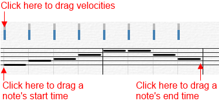

Choose this command to allow editing of MIDI directly on your score.
When you choose this command, the Score View will display notes as solid horizontal bars on the staff representing the note's start time and duration. Note velocities are displayed as solid vertical bars above the note. The light blue area under the solid vertical bar represents the velocity range 0 - 127. Note velocity is an attribute of each note and is not a completely separate event. You cannot add or remove velocity events.
To change a note's start time or duration, click and drag the left or right edge of the note's solid bar horizontally.
To change the note's pitch, click and drag the middle of the solid bar vertically.
To change the note's velocity, click and drag the top of the velocity bar vertically.

In addition to editing note MIDI data, you can edit MIDI controller data, tempo, and pitch bend. To display MIDI controller data or pitch bend, click on the small arrow at bottom left of the Control bar's Pencil Tool. A drop down menu appears allowing you to choose the type of data to be edited. The data is displayed as a small graph along the staff with the horizontal axis representing time, and the vertical axis representing the event values.
To enter new data, make sure the pencil tool is selected, and then click and drag along the staff, moving vertically to change value.
To erase existing data, click and drag using the eraser tool.
You can zoom in to edit in finer detail.
Note: To draw in the new data as straight lines, hold down the shift key while dragging.
About MIDI Controllers
MIDI hardware and software use controllers, special types of events, to control the details of how MIDI music is played. They use automation data to adjust volume, pan, and other parameters of MIDI and audio tracks on the fly while playback is in progress.
Controllers are the pedals, knobs, and wheels on your electronic instrument that you use to change the sound while you're playing. For example, a sustain pedal and a modulation wheel are two controllers commonly found on keyboards.
Controllers let you control the detail and character of your music. Say you are playing a guitar sound on your synthesizer, but it sounds lifeless and dull. That is partly because a guitar player does not just play notes one after another, they often use bends or slides on the strings to put emotion into his playing. You can use controllers in the same way, creating bends, volume swells, and other effects that make sounds more realistic and more fun to listen to.
Your computer can work the controllers on your electronic instrument by sending MIDI Controller messages. The MIDI specification allows for 128 different types of controllers, many of which have standard usages. For example, controller 7 is normally used for volume events, and controller 10 is normally used for pan. Every controller can take on a value ranging from 0 to 127.
Overture has automatic search back for all continuous controller data to ensure that the correct controller values are in effect regardless of where you start playback. Suppose you start playback halfway through a song. Overture searches back from that point to find any earlier controller values that should still apply.